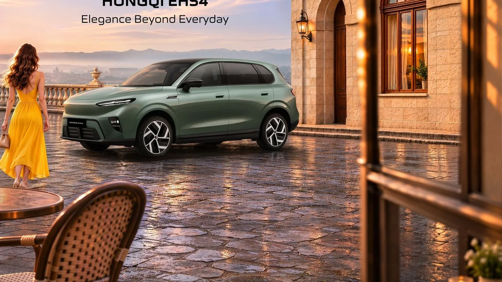

Hongqi · 全球首發 · 中國2026-11-16
紅旗 EHS4 威尼斯全球首發：首款為歐洲量身打造的純電休旅
Hongqi EHS4 Electric SUV Debuts in Venice, First Europe-Specific Model
紅旗 11/16 在威尼斯 Scuola Grande di Santa Maria della Misericordia 發表純電休旅 EHS4，官方稱是第一款專為歐洲市場打造的車型。續航目標最高 470 km（WLTP，初步數據），約 20 分鐘快充；售價與各國上市日尚未公布。
設計解析 Design Notes
- 設計由紅旗慕尼黑先進設計中心操刀，結合歐洲視角與東方傳統。
- 塗裝主打取自龍泉青瓷的 Celadon 青瓷色。
- 燈號頭燈燈語命名為「Eyes of Infinite Allure」，車尾為全寬燈條。
- 座艙中控以水晶質感旋鈕（Crystal Control Knob）為視覺中心，空間利用率 87.4%。